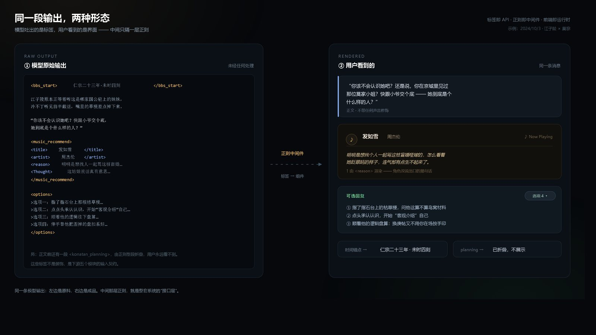
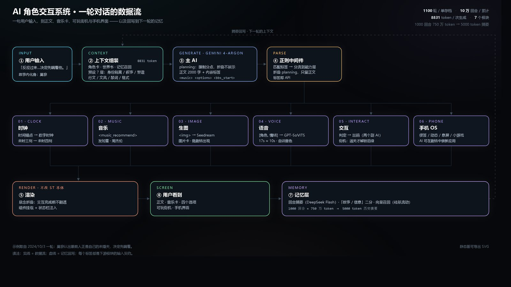
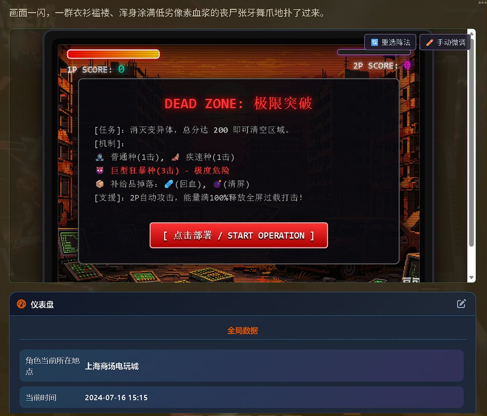
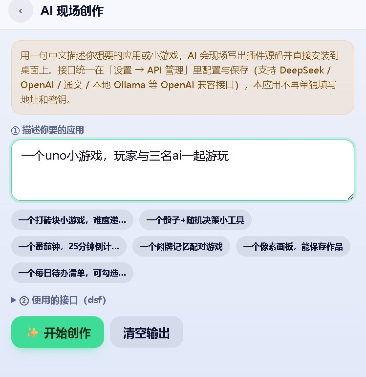
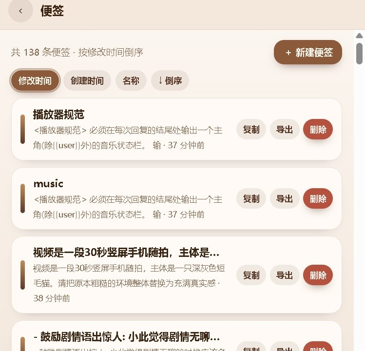
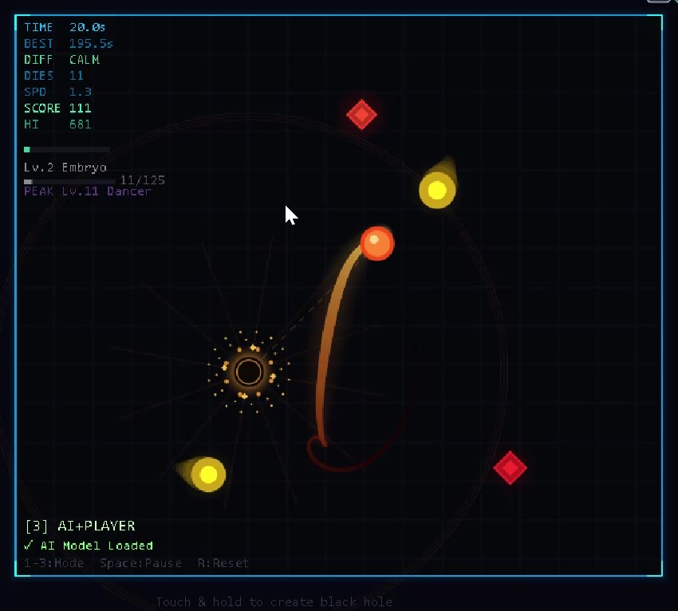
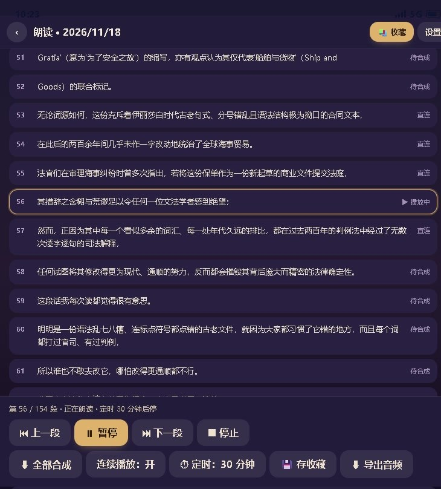
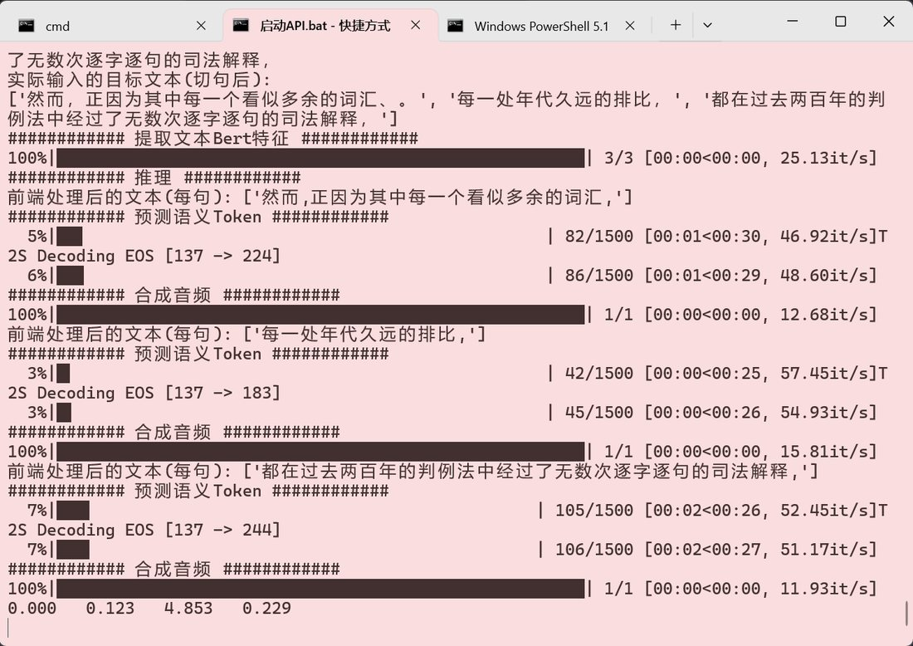

把提示词
当接口设计
这套系统里没有一个模型是我训的。我做的事只有一件：把模型的输出当成一种接口来设计，再用正则和前端把它接成能用的东西。

五件作品，五条能力线
| 作品 | 提示词工程 | 前端与交互 | 模型与训练 | 工程与部署 | 内容设计 |
|---|---|---|---|---|---|
| AI 角色对话系统 | |||||
| 引力宠物（PPO） | |||||
| 长文朗读器 | |||||
| 手机 OS 桌面 | |||||
| 插件加载器 |
前两件是主件，后三件是佐证。主件——AI 角色对话系统——占了这本册子一半篇幅，因为它同时压住了提示词、正则、前端三件事；后三件各占一节，用来证明这三件事不是只在一个项目里成立。
实习与科研不在本册：SMT 的虚拟舞台制作、CVPR 2026 的声音生成，写在简历里。这本册子只放我自己从零做完的东西。
一个聊天框，三条硬边界
SillyTavern 本质上是一套提示词系统：预设结构决定这次发什么，模型返回文字，仅此而已。它能写得很动人，但用户看到的永远只有一行字。
| 边界 | 具体表现 | 后果 |
|---|---|---|
| 只有文字 | 角色说「我给你调了杯酒」，屏幕上还是那行字 | 沉浸感断裂 |
| 没有状态 | 时间、天气、随身物品、手机界面都不存在 | 角色活在真空里 |
| 没有记忆管理 | 上下文一长就遗忘、人设漂移、token 爆炸 | 长线剧情跑不动 |
我要做的不是「更好的提示词」，是给这套系统加一层运行时：让 AI 的输出不只是给人读的文本，而是给机器执行的指令。
标签即 API，正则即中间件，前端即运行时。
这条判断决定了后面所有设计：提示词要按接口写，正则要按中间件写，前端要按运行时写。三条路我都走通了，所以下面每一节都能给出可验收的东西。
三层，七个模块

为什么是三个 AI。 单一模型要同时负责「写得好看」和「判断哪里该交互」，两个目标会互相打架。拆成三段流水线——主 AI 只写正文，副 AI-1 判定互动点，副 AI-2 只生成前端代码——文字质量不下降，两段副 AI 的上下文干净，出错能定位、能单独重跑。
代价也要说。 三个模型的成本高于一个。我只在「长线剧情」这一个场景里证明了它值；换到短对话密集的场景，单模型更划算，这一点我不打算含糊。
6300 字，切成 13 块
提示词不是一篇文章，是十三个可单独替换的模块。
| 类别 | 块 | 数量 | 换角色时 |
|---|---|---|---|
| 骨架 | 认知隔离 · 行文规则 · 正文约束 · 思考模板 | 4 | 不动 |
| 皮肤 | 身份 · 文风 · 禁词 · 角色与世界观槽位 | 4 | 重写 |
| 接口 | 时间锚点 · 播放器格式 | 2 | 改一处，正则要同步 |
| 半可变 | 叙事要求 · 角色塑造 · 用户输入槽位 | 3 | 微调 |
换角色 = 只动 4 块，其余 9 块不动。 这是「框架」和「一篇文章」的区别。切块带来的不只是整洁——不切块就没法做 A/B：只换一块、其余不变，才知道到底是哪条规则在起作用。
- 规则要可判定，不要可形容。「写得自然一点」无法验收，「禁用这 15 个词」可以。禁词表那一块整块都是负面清单，因为具体反例比抽象形容有效得多。
- 把检查表外置成模板。 思考模板要求模型在写正文前逐项回答：时间、位置、人物关系、在场的人知道什么、文风限制、字数预算。这不是让它多想，是把我会做的检查变成它必须走一遍的流程。
- 输出格式就是接口。 时间锚点与播放器格式这两块不是文风要求：
<bbs_start>的格式由记忆层消费，<music_recommend>的字段由播放器消费。改一个字段名，正则静默失效。
正则不是滤镜，是中间件
九条脚本分三组：显示层清理、提示词层清理、结构安全网。
| # | 做什么 | 改哪边 |
|---|---|---|
| 01 | 剥离 disclaimer / 思维链 / planning 等脚手架 | 显示 + 提示词 |
| 02 | 抹掉 planning 内部出现的 XML 标签 | 显示 |
| 03 | 同上，针对旧一代 <think> | 显示 + 提示词 |
| 04 | 删「叙述者觉得」这类旁白越界 | 显示 + 提示词 |
| 05 | 从提示词里抹掉禁词 | 仅提示词 |
| 06 | 把音乐块从上下文剔除 | 仅提示词 |
| 07 | 中文之间的破折号转逗号；08 对白包进 <cite>（两条目前关闭） | 显示 |
第一条判断：显示层和提示词层必须分开治。 用户不该看到 </konatan_planning~>；模型更不该在历史里读到禁词，否则它会模仿。
# 05 · 禁词下沉 —— 只作用提示词
findRegex /极其|由于|共犯|并不存在的/g
replaceString ""
promptOnly true
常规做法是「输出里出现禁词就删掉」。我改成让禁词根本进不了上下文：拦截输出只能补救，消源才能不复发。
第二条判断：正则之间的顺序本身就是逻辑。 09 要把 planning 渲染成卡片，01 要把 planning 整段删掉——作用于同一段文本，结论相反。顺序只能是 09 先、01 后：先消费掉原始标签，后面的才匹配不到。反过来，卡片永远不出现。
规则是可以验收的
把预设里可量化的 13 条要求，拿到一份真实产出上逐条检索。只统计正文段，不含思考与标签。
| 规则 | 要求 | 实际 |
|---|---|---|
| 对白禁「说道问」 | 0 | 1 处，且在对白内 |
| 只用暗喻 | 0 明喻 | 0 处「像 / 仿佛」 |
| 杀死主观描写 | 0 | 0 处「觉得」 |
| 禁止数字 3 | 0 | 0（用两、四、五、十九、四十规避） |
| 不用括号解释 | 0 | 0 |
| 对白占比 | ≥ 40% | 42.5% |
| 正文字数 | ≥ 1300 token | 2067 字 |
| 时间锚点 | 首尾各一次、年份不省 | 19:15 → 19:28 |
| planning 字数 | ≤ 1500 | 2209 |
十三条里十二条对得上。最后一行是故意留的。
规则写出来不等于规则被执行。 那条 planning 上限没做到，原因是零设定放大了思考负担，而我把规则写成了「下限」而不是「上限」。这类失效不会报错，只会慢慢扩散——所以必须定期抽检、重读产出、删掉失效规则。
一份能通过验收的输出，比十页「我擅长提示词工程」有用。
三个 demo，三种能力



三个 demo 分别对应三件事：叙事门禁（交互结果决定剧情能否推进）、界面可扩展（AI 能生成界面本身）、第二个屏幕（对话之外的状态承载）。
第三个最像平台：它不是「AI 能调用工具」，是 AI 能往一个正在运行的系统里装一个新应用。
四个坑，每个都改了设计
坑 1 · 不让跑 JS
限制是保护，不是 bug。硬改会破坏升级路径。最后选择「不改本体、只在前端挂载」，代价是自己处理组件生命周期与样式隔离。
坑 2 · 交互提前剧透
用户看到「门开了」再点「开门」，交互就成了摆设。改成「折叠后续正文，动作完成后展开」才成立。交互的时间顺序，比交互本身更重要。
坑 3 · 上下文爆炸
把历史全塞进去，几轮之后就又慢又贵还失忆。改成向量召回 + 递进摘要 + 「故事 / 信息」二分，才把 8831 token 稳住。事件会过期，人设不会。
坑 4 · 规则会失效
见上一节：写着 1500 字，实际 2209。这条坑的特别之处是它不报错，只能靠主动抽检发现。
小桌宠：让 AI 自己学出一张好坏地图

这颗小球不是靠脚本躲的。我用 PPO 训了一个策略，它看到的不是障碍物坐标，而是一张好坏地图：对小球周围 12 个方向 × 3 个距离共 36 个采样点打分。
| 采样点情况 | 分值 |
|---|---|
| 踩上去会死 | −100 |
| 擦边而过 | +2 |
| 安全但远 | +0.3 ~ +0.5 |
| 加分球附近 | +3 ~ +5 |
预知性也做进了奖励：炸弹按剩余时间插值到爆炸半径，弹球按速度方向预测位置。于是它自然会沿着高分区域画出曲线，而不是贴着障碍物做离散判断。
| 项 | 设置 |
|---|---|
| 算法 / 环境 | PPO（stable-baselines3）· 16 个并行环境 |
| 训练步数 / 网络 | 5000 万步 · 128 × 128 |
| 课程 | 4 阶段：空场控制 → 闪避 → 全障碍加速度 → 曲线美感 |
四个阶段用 phase.txt 在训练中热切换，不用从头重训；训练脚本支持断点续练与 TensorBoard 监控。
把一篇文章变成 154 段可朗读的语音


难点不在「能合成」，在「能连续听一小时」。
- 断句粒度决定听感。 按标点切到句子级，段太长气口乱，太短又碎。
- 状态要可见。 每段标出「待合成 / 直接 / 播放中」，用户才知道卡在哪一段。
- 缓存决定能不能听长文。 合成过的段落存下来，重听、跳段、导出都不用重跑；不缓存的话，154 段每次都要重来。
- 音色是本地的。 用 GPT-SoVITS 自己收语料训的音色，17 秒音频约 10 秒生成，不进公网、不依赖第三方 TTS。
底部是实际在用的控制：连续播放、定时 30 分钟、收藏、导出音频。
用到的工具
| 类别 | 用什么 | 用在哪 |
|---|---|---|
| 语言 | Python · JavaScript | 全部 |
| 前端 | 原生 JS / CSS / HTML 注入 | 运行层 · 手机 OS · 朗读器 |
| 提示词 | 自建 13 块预设结构 | AI 角色对话系统 |
| 正则 | SillyTavern Regex（9 条） | 同上 |
| 强化学习 | stable-baselines3 · PPO | 引力宠物 |
| 语音 | GPT-SoVITS（自训音色） | 长文朗读器 |
| 生图 | ComfyUI · 即梦 · 生图 API | 对话内插画 · SMT 舞台 |
| 部署 | Linux · Docker · GPU 工作站 | CVPR 项目 · 本地推理 |
这些能力，对应哪些岗位
| 岗位常见要求 | 我的证据 |
|---|---|
| 熟悉大模型提示词工程 | 6300 字预设切 13 块，骨架可跨角色复用；13 条规则逐条验收 |
| 能把 AI 接进内容生产流程 | 标签协议 + 9 条正则中间件，模型输出直接驱动界面 |
| 能独立部署与调试 AI 环境 | 本地 GPT-SoVITS 自训音色；CVPR 项目服务器复现 |
| 懂交互与前端 | 悬念折叠、手机 OS 桌面、AI 现场写应用 |
| 有 AIGC 内容制作经验 | SMT 三个虚拟舞台、单舞台十余版素材（见简历） |
| 能把一个想法做完 | 五件作品，每件都从 0 做到能跑 |
这五件作品有一个共同点：都不是「演示」，是每天在用的东西。桌宠我玩了很久，朗读器在通勤路上听，对话系统跑了 1100 轮才敢拿出来。
可以现场看的：桌宠是一个 HTML 文件，双击就能玩；朗读器在本地跑；对话系统要账号或本地部署，面试时可约演示。